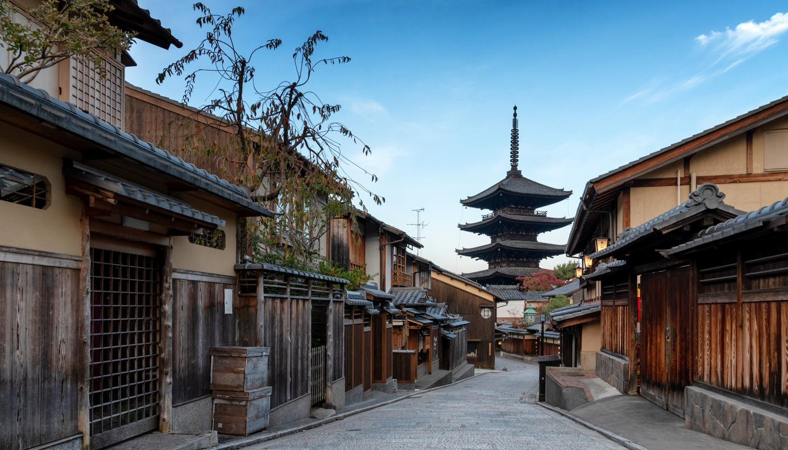

The history of Kyoto goes all the way back to the 8th century. The city was built as the capital of Japan at that time and was home to the Imperial Court until 1868 when it moved to Tokyo. No longer the capital of the country today, it is still the capital of the prefecture and superior to Tokyo when it comes to historical sites, relics, and monuments. Because it has managed to retain a charming traditional atmosphere in many neighborhoods it draws millions of domestic as well as international tourists each year. We have great package tours that include
Archeologists have found sites that date back all the way to the Jomon and Yayoi period of more than 10.000 years ago, but it wasn’t until the 6th century that the area has been colonized more permanently. This was the Hata clan who was originally from Korea. These people were silk farmers and became wealthy because of the trade in silk products. They built their family temple in the Western part of what would become Kyoto, as other powerful clans started moving into the northern part of the area.
Kyoto became the capital city of Japan in 794 after Nara and has been built to resemble the capital of China during the Tang dynasty (today’s Xi’an). The city was rectangular in shape and was 4.5 by 5.2 kilometers big. The city slowly started to expand towards the east, and powerful clans built their residences in central locations of the new capital city. The Heian period was a relatively peaceful era compared to what came after when the balance of power shifted from Kyoto to the east of Japan.
While it was the Emperor and the families surrounding the Imperial Family who had the political power in the Heian period, in 1185 the Minamoto clan grabbed this power and brought it to the new capital city Kamakura located 40 kilometers south of nowadays Tokyo. This new political structure is called a shogunate and had the shogun as a military leader ruling the country. When the shogunate in Kamakura fell in 1333, the power once again shifted back to Kyoto where they established another shogunate.
This was the time when many temples that we still can see today were constructed such as the Golden Pavillion and the Nanzenji. Before this time, the construction of temples had been forbidden because they didn’t want too much political influence from religious institutions. However, during the Kamakura period, Buddhism became a lot more powerful and popular and this made it possible to commission the building of many new temples. Unfortunately, a large part of the city was destroyed during a war in the mid-15th century.
In the late 16th century the civil war was finally ended by Toyotomi Hideyoshi, who then commissioned the building of the beautifully decorated Jurakutei Palace and Fushimi castle of which some parts still survive today.